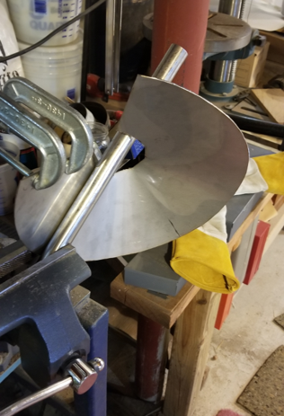
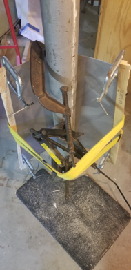
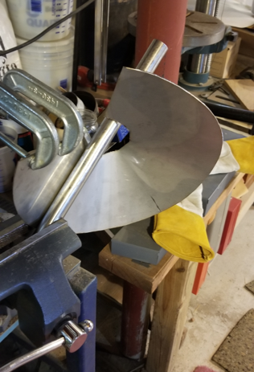
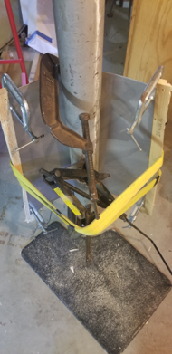

HOME | ENGINEERING PROJECTS | RESUME | CONTACT
Pulse Jet Engine
HOME | ENGINEERING PROJECTS | RESUME | CONTACT
Pulse Jet Engine
Project Description:
This project was inspired by famous youtuber Colin Furze and his various pulse jet projects. A Lockwood-Hiller pulse jet design is used in this project. This design has no moving parts and works by alternating air intake and exhaust cycles (pulses) through each of it's tail pipes. The combustion process works as follows:
1) Air flows into the shorter pipe as fuel is injected into the combustion chamber
2) A spark plug or match ignites the fuel-air mixture within the combustion chamber, which explodes the mixture and pushes exhaust out of the shorter pipe first
3) Next, the shorter pipe intakes air as a result of negative pressure within the pipe caused by exhausting the gases while the longer pipe pushes exhaust out. Each time air is sucked back into the combustion chamber, the flame front is also sucked back, thus reigniting the fuel-air mixture
4) The shorter and longer tail pipes continue to intake and exhaust in an alternating pattern. Thus results in a loud roar
The pulse jet is constructed entirely of 1/16 inch thick 304 stainless steel. The plumbing is very simple and consists of a propane tank and needle valve leading to a fuel rod that directly injects into the combustion chamber. Just about any fuel works in a pulse jet; however, it must be atomized before reaching the combustion chamber. Propane was chosen because it is already an atomized gas.
Future Work:
As shown in the video below, the pulse jet did self-sustain combustion for a few seconds; however, an ideal pulse jet should be able to self-sustain an indefinite combustion process. There are several possible reasons for why the pulse jet did not work exactly as intended. The geometry of the pulse jet is not perfect. This is likely because Dan Brogan does not own a sheet metal bender capable of bending thick stainless steel sheet and had to bend all parts by hand. This led to imperfect geometry. This project is also Dan's first attempt at TIG welding, and there are likely imperfect welds that affect the performance of the pulse jet. Dan is currently working on forming a new combustion chamber that will hopefully improve the performance of the pulse jet.
Manufacturing Process Gallery

 
